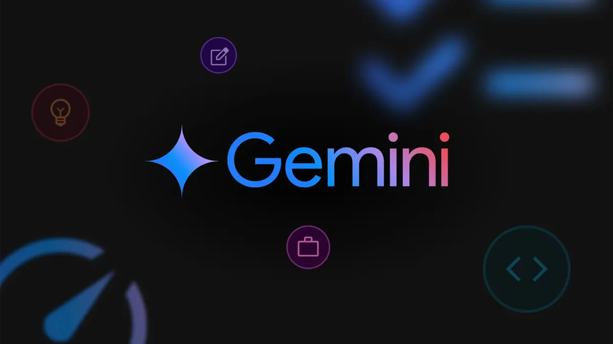
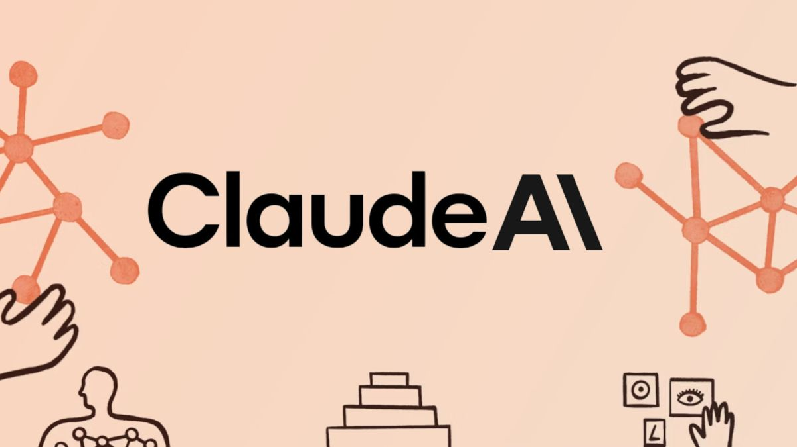
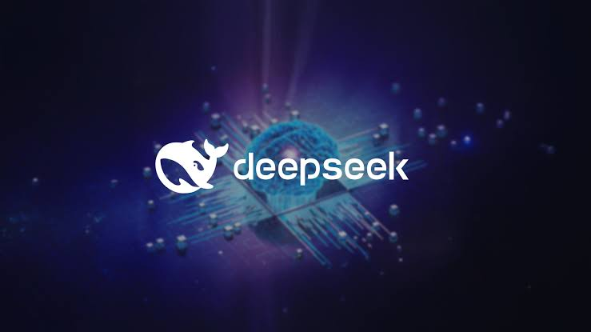
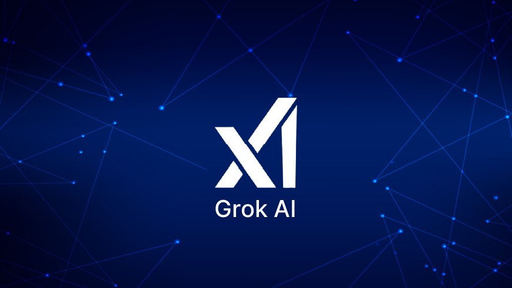
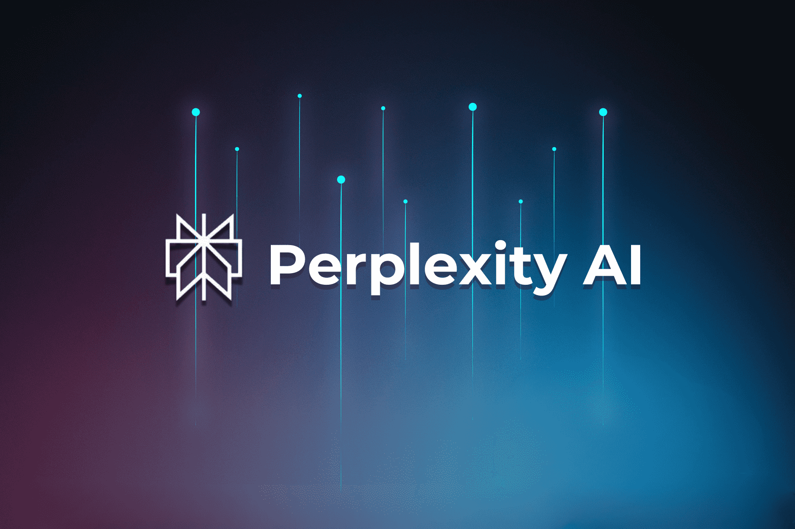

Text
Small
Standard
Large
43 languages

Tools

Qwen (Tongyi Qianwen) is a family of powerful, open-source large language models (LLMs) and multimodal models developed by Alibaba Cloud. Known for high performance in coding, mathematics, and reasoning, Qwen models—including the advanced Qwen 2.5 and Qwen3.5—are often released under Apache 2.0 licenses, making them accessible for commercial and research
Qwen LLM – general language model
Qwen-VL – vision + language (image understanding)
Qwen-Audio – audio processing
Qwen2 / Qwen2.5 – newer, more advanced generations
Qwen can understand and answer questions in human language very naturally. It supports chatting, explanations, summarization, and storytelling
Qwen can: Write code Debug programs Explain code Generate websites and apps It supports languages like Python, JavaScript, C++, Java, and more.
Qwen-VL models can: Read images Describe photos Extract text from images Understand charts and diagrams.
Some Qwen models support: Speech recognition Audio understanding Voice interaction.
New Qwen models can solve: Math problems Logical reasoning Complex step-by-step tasks
Many Qwen models are open-weight/open-source, so developers can:Download models Run locally Fine-tune for custom projects.
Qwen can remember and process very long conversations and documents with huge context support.
9. AI Agent Capabilities Qwen can use tools and perform tasks automatically like:Web browsing Planning Shopping assistance Workflow automation.
Qwen provides small and large models:Small models for mobile/on-device AI Huge models for advanced enterprise AI.
Qwen supports:Text Images Audio Video-related AI tasks in some versions.
Qwen uses advanced architectures like Mixture-of-Experts (MoE) for faster and more efficient performance.

| Advantage | Disadvantage |
|---|---|
|
|
If you want to use Qwen AI in the simplest possible way:
1. Open the Qwen website: https://qwen.ai
2. Sign in (if asked).
3. Click on the chat box.
4. Type your question, for example:
"Write a leave application."
"Help me with math."
5. Press Enter or click Send.
6. Read the answer.
7. Ask another question if you need more help.
That's it. You use Qwen just like chatting with a person. Type a question, get an answer, then continue the conversation.
43 language
Tools
Gemini is an artificial intelligence (AI) model developed by Google. It is designed to understand and generate text, images, code, and other types of information. Gemini helps users with tasks such as answering questions, writing content, learning new topics, and solving problems. It is one of Google's most advanced AI systems and is available through various Google products and services.
Gemini Nano – Lightweight version designed for mobile devices and offline tasks.
Gemini Pro – Balanced version for general AI tasks such as writing, coding, and reasoning.
Gemini Ultra – Most powerful version for complex reasoning and advanced tasks.
Gemini 1.0 – First major Gemini release introduced in 2023.
Gemini 1.5 – Improved context window and performance for large documents.
Gemini 2.0 – Enhanced multimodal capabilities and faster responses.
Gemini 2.5 – Advanced reasoning model with improved coding, research, and content generation abilities.
Gemini can work with multiple types of data at the same time: Text, Images, Audio, Video, Code For example, you can upload an image and ask Gemini to explain what it contains.
Gemini can create various types of content : Articles, Blog posts, Emails, Stories, Poems, YouTube scripts, Social media captions This helps content creators save time and improve productivity.
Gemini supports many programming languages such as: Python, Java, C++, JavaScript, HTML, CSS It can: Generate code, Explain code, Debug errors Suggest improvements
Gemini can solve complex problems by analyzing information and providing logical answers. It is useful for: Mathematics, Science, Research, Decision-making
Gemini integrates with Google services: Gmail, Google Docs, Google Sheets, Google Drive, Google Meet Users can draft emails, summarize documents, and organize information more efficiently.
Gemini can analyze images and: Identify objects, Read text from images, Describe scenes, Answer questions about pictures This feature is useful for education and research.
Gemini supports multiple languages and can: Translate text, Correct grammar, Rewrite content, Simplify complex information
Gemini can process large documents and long conversations. This helps users: Analyze lengthy reports, Summarize books, Review large datasets
Gemini can: Summarize articles, Extract key points, Generate study notes, Compare information from different sources
Through Google's ecosystem, Gemini can access current information and provide more up-to-date responses than traditional AI systems in many scenarios.
Gemini helps users: Plan projects, Create schedules, Manage tasks, Generate ideas, Improve workflow
Students and teachers can use Gemini for: Homework assistance, Concept explanations, Quiz creation, Study guides, Educational content generation

| Advantage | Disadvantage |
|---|---|
|
|
If you want to use GEMINI AI in the simplest possible way:
1. Open Google Gemini
2. Sign in (if asked) with your Google account.
3. Click on the New chat .
4. Type your question ( you can upload files or images), for example:
"Write a leave application."
"Create a login page in HTML and CSS."
5. Press Enter Gemini will generate a response.
6. Read the answer.
7. Ask another question if you need more help.
That's it. You use Gemini AI just like chatting with a person. Type a question, get an answer, then continue the conversation.
43 language
Tools
Claude AI is an advanced artificial intelligence chatbot developed by the company Anthropic. It was launched in 2023 and is designed to help users with writing, coding, answering questions, research, summarizing documents, and many other tasks. Claude is known for its focus on being helpful, honest, and safe.
Claude 1 – Best For Basic AI chat .
Claude 2 – Best For Writing & Q&A.
Claude 2.1 – Best For Accuracy & documents.
Claude 3 Haiku – Best For Speed.
Claude 3 Sonnet – Best For Everyday use .
Claude 3 Opus – Best For Advanced tasks.
Claude Haiku 4.5 – Best For Fast and affordable.
Claude Sonnet 4.6– Best For Balanced performance.
Claude Opus 4.8 – Best For Highest capability.
Claude can understand complex questions, analyze information, and provide logical answers. It is useful for problem-solving, decision-making, and academic tasks.
Claude can read long PDFs, reports, research papers, and documents. It can summarize content, extract key points, and answer questions based on the document.
Claude helps programmers by : Writing code Explaining code Finding and fixing errors Optimizing programs Supporting multiple programming languages
Claude can analyze images, screenshots, charts, graphs, and diagrams. It can describe what it sees and answer questions about the image.
Claude can process a very large amount of text in a single conversation. This helps when working with long documents, books, reports, or lengthy discussions.
Claude can create : Blog posts, Articles, Stories, YouTube scripts, Emails, Social media content and Marketing copy
Claude translates text between different languages while maintaining meaning and context. It can also improve grammar and writing quality.
Students, teachers, and professionals can use Claude to : Explain difficult topics Create study notes Generate summaries Answer educational questions Assist with research
Users can upload files such as PDFs, Word documents, and text files. Claude can read, analyze, summarize, and answer questions about uploaded content.
Claude provides natural and human-like conversations. It remembers context within a chat and can maintain coherent discussions.
Claude is built using a safety-focused approach called Constitutional AI. This helps it provide more helpful, harmless, and reliable responses.
Claude helps users : Create to-do lists Draft reports Organize projects Brainstorm ideas Manage workflows

| Advantage | Disadvantage |
|---|---|
|
|
If you want to use Claude AI in the simplest possible way:
1. Go to Claude AI on your computer or phone browser.
2. Sign up using your email, Google account
3. You'll see a text box.
4. Type your question or task and press Enter. Examples :
"Write a leave application."
"Create a login page in HTML and CSS."
5. Click the + button and upload : PDFs Word documents Images
6. Read the answer.
7. Ask another question if you need more help.
That's it. You use Claude AI just like chatting with a person. Type a question or upload a documents and photos, get an answer, then continue the conversation.
43 language
Tools
DeepSeek AI is a Chinese artificial intelligence company founded in 2023 by Liang Wenfeng. DeepSeek AI is an AI platform that helps users generate content, answer questions, write code, analyze data, and solve complex problems using advanced artificial intelligence technology. It is known for providing powerful AI models with an open-source approach and lower operating costs.
DeepSeek LLM – General AI Chat .
DeepSeek-Coder – Programming & Coding .
DeepSeek-Math – Mathematics .
DeepSeek-V2 – Improved Performance .
DeepSeek-V3 – Advanced AI Assistant.
DeepSeek-R1 – Reasoning & Problem Solving .
Answers questions in a conversational way. Helps with learning, research, and daily tasks.
DeepSeek-R1 is designed for logical thinking and complex problem-solving. Strong in mathematics and analytical tasks.
Writes, explains, and debugs programming code. Supports multiple programming languages.
Creates articles, blogs, essays, emails, and social media content. Useful for students and content creators.
Can understand and generate content in multiple languages. Supports English, Chinese, and many other languages.
Can process large documents and long conversations (up to 128K context in major models).
Provides quick responses with low latency. Optimized for efficiency and speed.
Many DeepSeek models are openly available for developers and researchers. Encourages customization and innovation.
Known for delivering strong AI performance at relatively low operating costs.
Translates text between languages. Summarizes long documents into concise points.

| Advantage | Disadvantage |
|---|---|
|
|
If you want to use Deepseek AI in the simplest possible way:
1. Go to the DeepSeek Official Website
2. Or install the official DeepSeek app from the Google Play Store or Apple App Store.
3. Click Sign Up. Register using : Email Google Account Apple ID (iPhone users) Verify your account if required..
4. Enter your email (or Google/Apple account) and password to access the chat.
5.Write your prompt in the chat box. Examples:
" Explain HTML in simple words. "
" Write a Python program for a calculator. "
6.Then press Enter or click Send and Read the answer.
7. Ask another question if you need more help.
That's it. You use Deepseek AI just like chatting with a person. Type a question, get an answer, then continue the conversation.
43 language
Tools
Grok AI is an advanced AI chatbot developed by xAI, a company founded by Elon Musk. It was launched in November 2023 to provide intelligent, real-time, and conversational assistance. Grok can answer questions, generate text, write code, analyze images, summarize documents, and assist with many daily tasks. Its integration with X (formerly Twitter) enables it to access up-to-date information, making it a powerful and versatile AI assistant.
Grok-1 – First version with real-time AI conversations.
Grok-1.5 – Better reasoning and coding performance.
Grok-1.5V – Added image understanding (vision).
Grok-2 – Improved speed, accuracy, and multimodal features.
Grok-3 – Most advanced version with enhanced reasoning, coding, image analysis, and web capabilities.
Grok can access up-to-date information from the web and X (formerly Twitter), helping users get current news and trends.
Upload PDFs, Word files, spreadsheets, and other documents for summarization, extraction, and analysis.
Writes, explains, debugs, and optimizes code in multiple programming languages.
Analyzes photos, charts, diagrams, and screenshots to answer questions about them.
It understands natural language and provides human-like, interactive responses.
Creates emails, articles, blogs, stories, captions, and social media posts.
Generates AI images from text prompts and supports image editing through its creative tools.
Supports hands-free voice conversations for a more natural interaction.
Helps solve mathematics, science, logical reasoning, and technical questions.
Available on the web, Android, and iOS, with conversations synchronized across supported devices.

| Advantage | Disadvantage |
|---|---|
|
|
If you want to use Grok AI in the simplest possible way:
1.Visit the official Grok website or open the Grok app.
2. Log in using your X account or another supported account. Create an account if you don't already have one.
3.Click or tap the Grok icon to start a new chat.
4. Type your question ( you can upload files or images), for example:
"Explain Artificial Intelligence."
"Write a Python program to sort numbers."
5.Press Enter or click the Send button.
6.Grok will generate a response within a few seconds.
7.Click New Chat whenever you want to begin a different conversation.
You also Generate Image in Grok AI
43 language
Tools
Perplexity AI Launched in 2022, Perplexity AI is an AI-powered search engine and chatbot that helps users find accurate information by understanding natural language questions. It searches the web in real time, summarizes information from trusted sources, and provides answers with citations, making research faster, easier, and more reliable.
Free (Standard) – Basic AI search with limited Pro searches, basic file uploads, and automatic model selection.
Perplexity Pro – Premium plan with advanced AI models, more Pro searches, file analysis, image generation, and priority support.
Education Pro – Discounted Pro plan for verified students and educators with Pro features.
Perplexity Max – High-end plan for power users with the highest usage limits, advanced research tools, and early access to new features.
Enterprise Pro – Business plan with team collaboration, security, and admin controls.
Enterprise Max – Advanced enterprise plan with maximum limits and enterprise-grade security and management.
Understands natural language questions. Provides direct and accurate answers instead of just a list of links.
Searches the internet in real time to provide the latest and most up-to-date information.
Every answer includes links to the original sources, making it easy to verify information.
Supports follow-up questions and remembers the context of the conversation for a smoother chat experience.
Supports advanced AI models such as GPT, Claude, and others (depending on your plan).
Performs in-depth research by searching multiple sources and creating detailed reports in minutes.
Allows users to upload PDFs, Word documents, images, and other files to summarize, analyze, or answer questions about them.
Works with text, images, and documents, enabling richer interactions.
Offers more comprehensive, accurate, and detailed search results than standard search.
Available on web browsers, Android, iOS, Windows, and macOS, allowing access from almost any device.

| Advantage | Disadvantage |
|---|---|
|
|
If you want to use Perplexity AI in the simplest possible way:
1.Visit the official website: https://www.perplexity.ai Or download the Perplexity AI app from the Google Play Store or Apple App Store.
2.Click Sign Up or Log In. Create an account using your Google, Apple, or email account. You can also use the Free version without subscribing to Pro.
3.Click the search box.
4. Type your question ( you can upload files or images), for example:
"Write a leave application."
"Create a login page in HTML and CSS."
5. Press Enter Perplexity AI will generate a response.
6. Read the answer.
7. Ask another question if you need more help.
43 language
Tools
Sarvam AI is an Indian artificial intelligence (AI) company that develops Large Language Models (LLMs) and AI solutions specifically designed for Indian languages. Founded in 2023, the company aims to make AI accessible to everyone in India by supporting multiple regional languages and building AI tools for businesses, developers, and government organizations. Sarvam AI focuses on creating reliable, affordable, and locally relevant AI technology that understands India's linguistic and cultural diversity.
Sarvam-1 – First multilingual LLM.
Sarvam-M – Improved multilingual model with better efficiency.
Sarvam Agents – AI agents for business automation.
Sarvam APIs – AI services for developers and enterprises.
Sarvam AI is designed to understand and generate text in Hindi, Tamil, Telugu, Bengali, Marathi, Kannada, Gujarati, Punjabi, and many other Indian languages.
It provides powerful AI language models for answering questions, writing content, coding, summarization, and translation.
Converts spoken language into accurate text, making voice-based applications easy to build.
Generates natural-sounding voices in multiple Indian languages for chatbots, audiobooks, and virtual assistants.
Translates text between English and various Indian languages with high accuracy.
Extracts text and information from scanned documents, PDFs, and images using AI-powered Optical Character Recognition (OCR).
Enables businesses to build multilingual AI voice assistants for customer support, banking, healthcare, and government services.
Offers REST APIs and SDKs so developers can integrate AI features into websites, apps, and software.
Supports cloud, private cloud, on-premises, and air-gapped deployments, making it suitable for organizations with strict security requirements.
Sarvam AI is developed in India with a focus on Indian languages, culture, and local use cases, making it highly relevant for Indian users and enterprises.
| Advantage | Disadvantage |
|---|---|
|
|
Follow these simple steps to start using Sarvam AI.
1. Open your web browser (Chrome, Edge, Firefox, etc.).
2. Visit the official Sarvam AI website.
3. Create an account or sign in if required.
4. Type your question or prompt.
Click the Generate, Convert, or Translate button.
Wait a few seconds for the AI to process your request.
5.Read the generated text.
In short: Open Sarvam AI → Sign in → Choose a service → Enter your input → Select a language → Generate the result → Review and download or copy the output.
43 language
Tools
Midjourney AI is a powerful artificial intelligence (AI) tool that creates high-quality images from text descriptions, also known as text-to-image generation. It was launched in 2022 by the independent research company Midjourney, Inc. Users simply type a prompt describing the image they want, and the AI generates unique digital artwork, illustrations, realistic photos, concept art, logos, and other creative visuals within seconds.
Version 1 (V1) – First public release with basic AI image generation from text prompts.
Version 2 (V2) – Improved image quality, better compositions, and more detailed outputs.
Version 3 (V3) – Faster image generation with enhanced artistic styles and creativity.
Version 4 (V4) – Major improvement in realism, image consistency, and prompt understanding.
Version 5 (V5) – Produced highly realistic images with better lighting, textures, and accurate details.
Version 5.1 (V5.1) – Improved prompt accuracy, natural colors, and overall image quality.
Version 5.2 (V5.2) – Sharper images, stronger aesthetics, and improved zoom and variation features.
Version 6 (V6) – Better understanding of complex prompts, improved text rendering, and higher-quality outputs.
Version 6.1 (V6.1) – Faster image generation, improved textures, better hands, faces, and image coherence.
Version 7 (V7) – Smarter prompt interpretation, improved image quality, Draft Mode, and Omni Reference for more consistent characters and objects.
Version 8.1 (Current Default) – Fastest version to date, with improved prompt adherence, native 2K HD image generation, and significantly faster rendering.
Midjourney AI converts written text prompts into high-quality images, allowing users to create visuals simply by describing what they want.
It generates detailed, realistic, and artistic images with excellent colors, lighting, textures, and compositions.
The AI understands complex and detailed prompts, producing images that closely match the user's description.
For every prompt, Midjourney creates several image options, giving users multiple creative choices.
Users can increase the resolution and quality of selected images, making them suitable for professional use and printing.
Existing AI-generated images can be modified by creating new variations, changing styles, or adjusting compositions.
Midjourney supports many visual styles, including realistic photography, digital art, anime, fantasy, watercolor, oil painting, 3D renders, and concept art.
It produces high-quality images within seconds or minutes, helping users save time during the creative process.
Users can create and manage images through Midjourney's web interface or Discord, making the platform accessible and easy to use.
Midjourney is widely used by designers, marketers, advertisers, content creators, architects, game developers, and businesses to create visuals for websites, social media, presentations, branding, and other creative projects.
| Advantage | Disadvantage |
|---|---|
|
|
Open your web browser and go to the official Midjourney website.
1. Sign up using your Google or Discord account, or log in if you already have an account.
2. Select a subscription plan that fits your needs. Midjourney requires a paid plan to generate images.
3. After logging in, click the Create option to start generating images.
4. Type a clear description of the image you want. For example: "A futuristic city at sunset with flying cars, ultra-realistic, 4K."
Click the Generate button. Midjourney will create multiple image variations based on your prompt.
Look through the generated images and choose the one you like best.
5.Use the available tools to create variations, upscale the image for higher quality, or make further adjustments.
6. Save the final image to your device for personal or professional use.
7. Try different descriptions, styles, lighting, camera angles, colors, and artistic effects to create unique and more accurate images.
43 language
Tools
ChatGPT is an advanced conversational artificial intelligence (AI) platform developed by OpenAI. Initially launched in late 2022 as a text-based chatbot, it has evolved into a highly sophisticated, multimodal AI assistant capable of processing, reasoning, and creating across text, voice, code, and images.
GPT-1 – The first GPT model. It introduced the transformer-based approach for generating text and proved that pre-training followed by fine-tuning was effective.
GPT-2 – A much larger model with improved text generation. It could produce more coherent and natural responses than GPT-1.
GPT-3 – A major breakthrough with 175 billion parameters. It became widely used for writing, coding, translation, and question answering.
GPT-3.5 – The model that powered the first public release of ChatGPT. It provided faster, more conversational, and more accurate responses than GPT-3.
GPT-4 – A more advanced model with stronger reasoning, creativity, and accuracy. It also introduced multimodal capabilities, allowing users to work with both text and images.
GPT-4o – An "omni" model that can understand and generate text, images, and audio in real time. It is faster, more capable, and supports natural voice conversations.
GPT-4.1 – Improved coding, instruction following, and long-context performance, making it well suited for software development and professional tasks.
GPT-5 – The latest generation, offering stronger reasoning, better accuracy, improved multimodal abilities, and enhanced support for complex tasks across writing, coding, research, and analysis.
ChatGPT understands questions and instructions written in everyday language and responds in a clear, conversational manner.
It can write articles, essays, emails, blogs, reports, captions, stories, poems, and other types of content.
ChatGPT provides detailed explanations and answers on a wide range of topics, including science, technology, history, mathematics, and general knowledge.
It can generate code, explain programming concepts, debug errors, and help with multiple programming languages such as Python, Java, C++, JavaScript, and more.
It can summarize long documents, articles, research papers, or reports into short and easy-to-understand points.
ChatGPT can translate text between many languages while maintaining the meaning and context.
It checks grammar, spelling, punctuation, and sentence structure, and can rewrite text to make it more professional or easier to read.
It helps generate ideas for projects, business names, presentations, marketing campaigns, social media posts, and creative writing.
Advanced versions of ChatGPT can analyze images, describe them, answer questions about them, and extract information from charts, diagrams, and documents.
ChatGPT is available anytime, making it a convenient assistant for learning, work, and personal tasks.
| Advantage | Disadvantage |
|---|---|
|
|
Visit the ChatGPT website or open the mobile app.
1. Sign in to your account or create a new one if needed.
2. Click New Chat.
3. You will see a text box where you can type your question or request.
4. Type what you want ChatGPT to do. Be as clear as possible.
Examples: "Explain photosynthesis in simple words." "Write a leave application."
Press Enter or click the Send button.
5. ChatGPT will generate a response within a few seconds.
6. Review the answer carefully.
7. Continue the conversation to get more details or request changes.
Click New Chat whenever you want to begin a new conversation on a different subject.
43 language
Tools
TTSMaker is a free AI-powered Text-to-Speech (TTS) platform that converts written text into natural-sounding speech. It allows users to create high-quality voiceovers in multiple languages and voice styles without needing professional recording equipment. The generated audio can be downloaded in formats such as MP3 and used for personal, educational, or commercial projects, subject to its licensing terms.
TTSMaker Free – Free plan with basic text-to-speech features, limited weekly characters, ads, and standard support. Suitable for beginners and personal use.
TTSMaker Lite – Paid beginner plan with higher monthly character limits, no ads, faster processing, and more advanced voice generation features.
TTSMaker Pro Mini – Designed for content creators. Includes AI Voice Dialogue, emotional voices, API access, larger character limits, and priority support.
TTSMaker Pro Max – Professional plan with even higher monthly character limits, API support, dialogue editing, and premium features for frequent users.
TTSMaker Studio – Enterprise-level plan for studios and businesses. Offers the highest character limits, advanced AI voice tools, API integration, and premium support.
Converts written text into natural, human-like speech within seconds. Suitable for voiceovers, audiobooks, podcasts, and presentations.
Provides voice generation in more than 100 languages and regional accents, making it useful for global audiences.
Offers over 600 AI voice options, including male, female, and different speaking styles.
Lets users adjust speech speed, pitch, volume, and pauses to create more natural-sounding audio.
Pro plans include emotional voice settings such as happy, sad, angry, and different speaking styles for expressive narration.
Download generated voiceovers in formats such as MP3 and WAV for use in videos, podcasts, and e-learning content.
Create conversations using multiple AI voices with the built-in dialogue editor (available in Pro plans).
Generated audio can be used for personal and commercial projects according to TTSMaker's licensing terms.
Developers can integrate TTSMaker into websites, mobile apps, and software using its API (Pro/Studio plans).
No software installation is required. Simply enter text, choose a voice, generate the speech, and download the audio directly from your web browser.
| Advantage | Disadvantage |
|---|---|
|
|
Visit the official TTSMaker website.
1. You can use it directly in your web browser without installing any software.
2. Create a free account to access more features and save your projects.
3. You can also use some features without signing in.
4. Type or paste the text you want to convert into speech.
Check your text for spelling and punctuation to improve pronunciation.
Choose the language in which you want the speech to be generated.
5. TTSMaker supports many languages and regional accents.
6. Select a male or female voice from the available AI voice options. Pick the voice that best matches your project.
7. Adjust settings such as: Speech Speed – Make the voice speak faster or slower. Pitch – Make the voice sound higher or lower. Volume – Increase or decrease the loudness. Pauses – Add natural pauses where needed. Click the Convert, Generate, or Start button. Wait a few seconds while TTSMaker converts your text into audio.
Listen to the generated speech. If needed, edit your text or change the voice and regenerate the audio. Download the voiceover in the available audio format (such as MP3, and WAV on supported plans). Save it to your computer or device.
Donate
Text
Small
Standard
Large
Width
Standard
Wide
Color (beta)
Automatic
Light
Dark